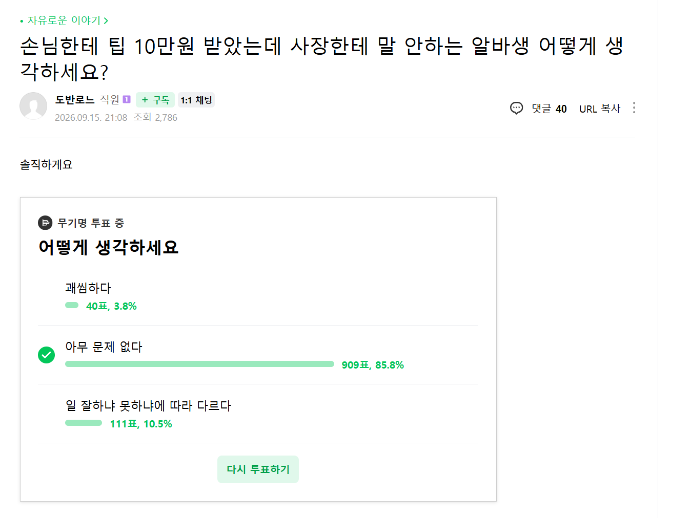
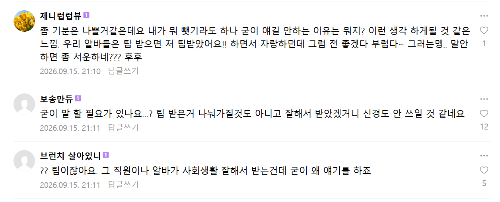

출처:
네이버 카페 - 아프니까 사장이다
결과는 생각보다 정상


출처:
네이버 카페 - 아프니까 사장이다
결과는 생각보다 정상
예시가 상당히 구체적이네요 ㅋㅋ
많이 상심하셨겠습니다.
그럼 "와 잘생기면 팁도 더받네 인생 리세마라 마렵네ㅋㅋㅋㅋㅋ" 하고 하던 알바 마저하겠지 아니면 그걸 동기삼아서 "난 서비스라도 잘해서 팁 받아봐야겠다" 이런 생각하지 왜 받은놈꺼가지고 그럼?
애초에 팁받으면 그건 본인겁니다 박고 시작해야함
누가 누구한테 박아?
왜?
아지매들 많고 바쁘게 돌아가는 팁 좀 많이 받는 집들은 싹다 모아서 나눠주기도함
병신새끼 ㅋㅋㅋㅋ 팁받았으니까 월급 덜줘도 되겠지? 이생각한듯
팁을 사장이 가져간 피자집이 실제로 존재했다! 사고치면 알바비에서 까인다 함
개폐급에 피해만 끼쳐서 짜르기 직전인 애가 받으면
그거랑뭔상관임
받으면 받는거지 뭐
애초에 그런애가 받을 확률 적음
니가 저 사장이구나?
원래 돈 벌면 자랑하는게 아니라는 말이 있지
생각보다 정상은또뭐냐 ㅋㅋㅋ
원래도 정상인 사람이 많은데
자영업 하는 사람들이 다 병신인줄알았나
ㅋㅋㅋㅋㅋㅋㅋㅋㅋㅋㅋㅋㅋㅋㅋㅋㅋ
저거 가지고 꽁해가지고 투표하는 새낀데 알바가 눈치가 좋네
근데 저거 서빙이 팁 자랑하다가 주방이랑 싸우는경우 많다던데
그런거 보면 사장이 알 필요는 있을듯
그리고 사장이 팁 가져갈리는 없겠지만 팁 먹는건 개쓰레기 새낀데 그런가게가 잘될리가 없음
자기들 일 아니라고 판사들 나셨네. 너랑 어제 온 신규 알바생이랑 똑같이 일했는데, 어떤 아줌마가 신규알바생에게만 잘생겼다면서 10만원 쥐어주면, 엥 더 열심히 하자 하고 그냥 지나갈 놈 있냐? 사장입장에선 그래도 넓게 볼수도 있는거지